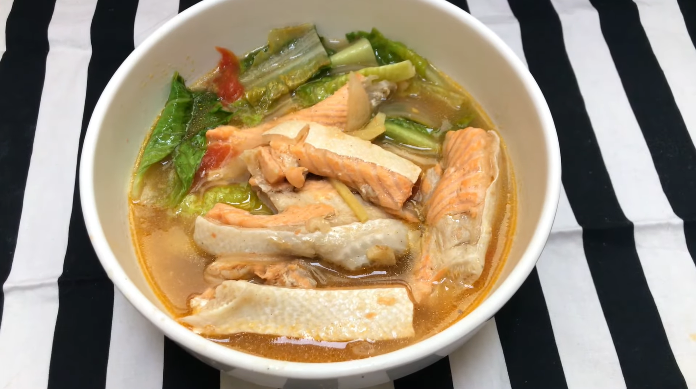

Home Page
Salmon Sinigang

Ingredients
- 1 1/2 lbs. salmon fillet
- 3 10g pouches Knorr Sinigang na Isda mix
- 1 bunch kangkong
- 10 pieces snake beans
- 2 medium ripe tomato
- 6 to 8 pieces okra
- 6 ounces Daikon radish
- 1 medium yellow onion
- 4 pieces long green peppers
- 3 tablespoons patis
- 1/4 teaspoon ground black pepper
- 1 1/2 quart water
Steps
- Pour water in a cooking pot. Let boil.
- Add tomato, onion, and Daikon radish. Cover and cook for 5 minutes.
- Add salmon fillet. Cook for 2 minutes.
- Add Knorr Sinigang na Isda mix. Stir.
- Put the long green peppers into the pot along with the okra, and snake beans. Cover the pot. Cook in medium heat for 2 minutes.
- Add kangkong stalks. Season with patis and ground black pepper. Cook for 2 to 3 minutes.
- Add kangkong leaves. Turn the heat off. Cover the pot and let it stay for 5 minutes.
- Transfer to a serving bowl. Serve!